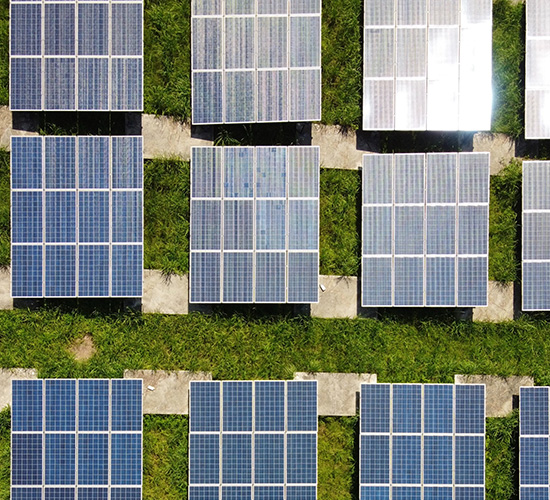

연구소 소개
KUMHO E&C
Engineering & construction
지속적인 연구개발을 통한 고도화된 기술력으로 21세기 건축 산업을 주도하겠습니다.
새로운 성장을 위한 금호건설의 건설기술 소재 및 정보통신기술이 융합된 기술, 환경친화적인 기술 및 예술로까지 승화하는 기술만이 건설문화를 이끌어 갈 수 있습니다. 기술, 정보, 환경, 예술의 일체화를 위한 건설문화 창조를 R&D에 대한 과감한 투자와 인재양성으로 이룩하고 있습니다.
건설기술에 대한 기초연구, 국토의 확장과 효율적 이용, 사회기반시설의 계획과 시공 및 추진관리, 생산성 향상 등의 연구활동으로 기술 선진국의 꿈을 펼쳐가고 있으며 지난 반세기동안 아파트, 빌라, 호텔 등의 건축공사와 지하철, 고속도로, 항만, 골프장, 레저시설 등 토목공사 및 전기 · 통신, 조경분야에 이르는 모든 건설분야에 참여하면서 축척된 수많은 시공경험과 기술력을 바탕으로 건축, 토목, 조경 등 전 분야에서 지속적인 연구개발 활동을 전개하고 있습니다.
금호건설 연구소 방침
위 방침을 기준으로 보다 나은 건설회사로 거듭나기 위해서 독보적 기술과 혁신을 바탕으로 차세대 성장기반 기술을 확보하는 노력도 소홀하지 말아야 할 것입니다
-
- 기술개발전략의 특성화,차별화
- 특화 연구 분야 요소 기술 및 시스템화 기술개발
-
- 선진기술 도입
- 신진기술 제휴 및 개량
- 자체 개발로 조기 기술 경쟁력 확보
-
- 개발기술 실용화
- 환경친화적, 고객창출형 기술개발
- 국내외 건설기술 정보네트워크 구축
- R&D의 적시성, 경제성 강화
오시는 길
- 주소서울특별시 종로구 우정국로 26 센트로폴리스 A동
- 대표전화02-6303-0972
- 우편번호03161